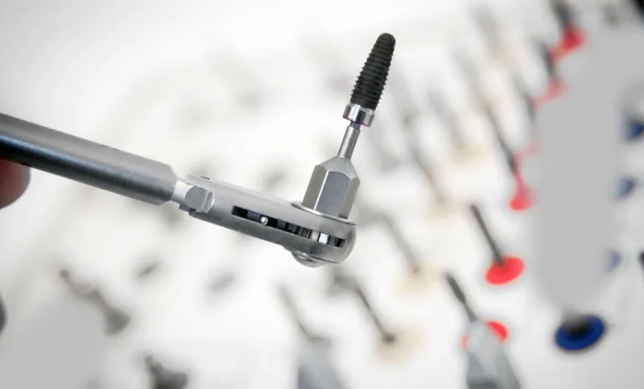

- Luni – sâmbătă, 9:00 – 19:00

Protezele dentare nu trebuie să fie doar estetice, ci și funcționale. Odată cu dezvoltarea tehnologiei implanturilor, implanturile dentare continuă să fie o alegere populară. Unul dintre cei mai importanți factori care afectează succesul pe termen lung al implanturilor este integrarea lor armonioasă cu țesuturile din jur. În anumite cazuri, poate fi necesară și îndepărtarea implantului. (De fapt, doar puțin sub trei la sută din toate implanturile dentare utilizate trebuie înlocuite sau îndepărtate în cinci ani.) Acestea includ consulta cu privire la toate aspectele legate de implanturile dentare din Turcia.
Implanturile dentare pot fi îndepărtate?
Da, implanturile dentare pot fi îndepărtate. Cu toate acestea, procedura de îndepărtare poate fi destul de invazivă și, în funcție de starea osului în care este plasat implantul, pot fi necesare proceduri chirurgicale suplimentare. Țesutul osos din jurul implantului și sănătatea țesuturilor adiacente vor fi, de asemenea, luate în considerare în timpul acestei proceduri.
Când este necesară extracția implantului dentar? 4 cazuri

Traumatism
În primul rând, deteriorarea osului maxilar poate afecta stabilitatea implantului, care, la rândul său, afectează negativ funcția acestuia. Traumatismele la nivelul maxilarului, mai ales ca urmare a unor accidente grave, cresc sarcina asupra implantului și duce la eșecul său. În acest caz, trebuie efectuată extracția implantului dentar și procedurile de vindecare a osului maxilar.
Infecţie
Igiena dentară inadecvată este o altă cauză importantă a eșecului implantului. O igiena dentară bună protejează sanatatea țesuturilor din jurul implantului si previne infectii precum periimplantita. Cu toate acestea, atunci când igiena dentară este inadecvată, pot apărea probleme precum inflamația și degradarea osoasă în jurul implantului. În acest caz, va fi necesară extracția implantului dentar.
Înainte de a începe orice tratament cosmetic/complex, cum ar fi implanturile dentare, sănătatea dumneavoastră orală poate să fie excelentă. În cazul bolilor gingiilor, simptomele se manifestă de obicei mai târziu și erodează țesutul din jurul implantului, lăsându-vă cu puține opțiuni în afară de extracția implantului dentar.

Periimplantita este unul dintre cele mai frecvente cauze de extracția implantului. În acest caz, inflamația se manifestă în țesuturile din jurul implantului, ducând la degradarea osoasă în timp. Inflamația și p degradarea osoasă reduc stabilitatea implantului și duc la ineficiența acestuia pe termen lung. În caz de periimplantită, este necesar un plan de tratament detaliat pentru a extrage implantul și a trata infecția.
Implanturi dentare slăbite
În timp, implantul poate slăbi din cauza respingerii de către organism, a vindecării necorespunzătoare sau a densității osoase scăzute. Această slăbire poate provoca disconfort și poate necesita îndepărtarea.
Reactii alergice
Titanul este un aliaj foarte biocompatibil. Cu toate acestea, deși rar, la unii pacienți, titanul utilizat în implanturile dentare provoacă o reacție alergică și poate fi necesară extracția implantului.
Extracția implantului dentar
Extracția implanturilor dentare necesită o procedură chirurgicală similară cu plasarea lor și se efectuează de obicei sub anestezie locală. Această procedură începe prin efectuarea unei mici incizii în zona în care a fost efectuată implantarea.
Complexitatea operației este direct legată de laxitatea țesuturilor din zona în care urmează să fie extras implantul. Dacă țesuturile sunt destul de libere, implantul poate fi de obicei îndepărtat cu ușurință folosind o cheie dinamometrică pentru implant. Cu toate acestea, dacă implantul este bine fixat, poate fi necesară o intervenție mai complexă pentru a-l îndepărta.
Alternativ, implantul poate fi extras folosind pensete de țesut osos Aceste instrumente permit îndepărtarea eficientă a implantului, fără a trauma țesuturile din jur.
În unele cazuri, pentru îndepărtarea implantului pot fi necesare instrumente specializate, cum ar fi o freză Lindemann. Acest burghiu este folosit pentru a îndepărta cu atenție țesutul osos din jurul implantului, facilitând îndepărtarea implantului.
Recent pentru îndepărtarea implanturilor a fost folosită și tehnologia laser. Procedurile cu laser oferă o abordare minim invazivă și reduc riscul de deteriorare a țesuturilor din jur.
Se poate plasa un implant dentar nou după îndepărtare?
După îndepărtarea implantului dentar, posibilitatea și succesul reimplantării depind de mai mulți factori.
În urma procedurii, timpul de recuperare după îndepărtarea implantului dentar depinde în primul rând de gradul defectului osos și de starea țesuturilor din jur. Dacă există un defect osos minor, un implant nou poate fi plasat imediat, dar poate fi necesar să fie selectat un diametru mai mare. Cu toate acestea, în cazul unei inflamații severe sau pierderi osoase, este necesar un proces de vindecare pentru a asigura un mediu favorabil reimplantării.
Procesul de vindecare variază de obicei de la câteva zile la câteva săptămâni și include o fază în care are loc formarea osului. În acest proces, infecția este controlată și țesutul osos este reconstruit. Odată ce osul s-a regenerat corespunzător, este posibilă reimplantarea cu succes a implantului.
Candidații potriviți pentru reimplantare trebuie să fie supuși unui proces de tratament specific pentru a permite țesutului osos să obțină o regenerare și o stabilitate adecvate. De asemenea, este important să se evalueze temeinic cauzele îndepărtării implantului și să se ia măsurile necesare.
Ce este eșecul precoce al implantului?
Cauzele posibile ale pierderii precoce a implantului includ:
Eșecul realizării unei fuziuni complete os-implant: Osteointegrarea, fuziunea solidă a implantului cu osul, este baza unui implant de succes. Cu toate acestea, formarea de țesut cicatricial fibros între suprafața implantului și os poate rezulta din plasarea insuficient de stabilă a implantului. În acest caz, implantul nu se poate integra corect cu osul și poate provoca pierderea precoce.
Nerespectarea regulilor în timpul operației: Pregătirea necorespunzătoare a cavității sau aplicarea incorectă a tehnicilor chirurgicale în timpul intervenției chirurgicale de implant poate duce la complicații precum deteriorarea țesuturilor dure sau necroza osoasă. Acest lucru poate afecta negativ procesul de osteointegrare și poate duce la pierderea implantului.
Sterilizarea și infecția: Sterilizarea inadecvată a implanturilor și instrumentelor chirurgicale poate crește riscul de infecție. Infecțiile pot afecta contactul os-implant și pot duce la pierderea implantului.
Lipsa stabilității primare: Dacă nu este asigurată o stabilitate primară adecvată în timpul plasării implantului, procesul de osteointegrare poate eșua și se poate produce pierderea implantului.
Presiune prematură: Suprasolicitarea implantului înainte ca acesta să fi fuzionat suficient cu osul poate afecta procesul de osteointegrare și poate duce la pierderea implantului.
Boli sistemice și inflamație: Unele boli sistemice sau inflamații locale pot interfera cu îmbinarea cu succes a implanturilor și pot cauza pierderea precoce.
Din aceste motive, planificarea și execuția chirurgicală atentă, respectarea regulilor de sterilizare și plasarea corectă a implanturilor sunt importante în timpul procedurii de implant dentar. Dacă acești factori nu sunt luați în considerare, se poate produce pierderea timpurie a implantului.
Ce este eșecul tardiv al implantului?
Printre cauzele tardive ale pierderii implantului dentar, putem enumera următoarele:
Periimplantita: Infecția țesuturilor din jurul implantului este una dintre cele mai frecvente cauze ale pierderii implantului. Această afecțiune este de obicei cauzată de o infecție bacteriană, cum ar fi infecția gingiilor, și poate duce la pierderea osoasă în jurul implantului.
Pierderea osoasă: Pierderea osului maxilar în care este plasat implantul poate afecta stabilitatea implantului și poate duce la eșecul implantului pe termen lung. Aceasta poate fi asociată cu neintegrarea armonioasă a implantului cu osul sau cu resorbția țesutului osos în timp.
Pierderea osoasă periimplantară: pierderea țesutului osos din jurul implantului în timp poate reduce stabilitatea și durabilitatea implantului. Aceasta este adesea asociată cu periimplantită sau alți factori biologici.
Erori în plasarea implantului: erorile chirurgicale sau tehnice în procesul de inserare a implantului pot fi cauza pierderii implantului. Aceasta poate include factori precum poziționarea incorectă a implantului, suportul osos inadecvat sau integrarea incorectă a implantului.
Incompatibilități: În funcție de materialele implantului sau de tratament, implantul poate fi respins de organism sau poate provoca reacții alergice. În acest caz, pierderea implantului este inevitabilă.
Când putem considera un implant dentar eșuat?
Putem enumera pe scurt simptomele unui implant dentar eșuat, după cum urmează:
1. Durere și disconfort
Durerea persistentă, disconfortul sau sensibilitatea în implantul dentar pot fi primul semn că implantul nu s-a vindecat corespunzător.
2. Umflarea în jurul dintelui
Umflarea semnificativă poate indica că implantul a eșuat. Problemele gingiilor, în special simptomele precum sângerarea, roșeața sau recesiunea gingiilor nu trebuie ignorate.
3. Goluri între dinți
Formarea spacțiilor între dinți în jurul implantului dentar poate sugera că implantul nu este plasat corect sau că nu este compatibil cu țesuturile din jur.
4. Decolorarea sau albirea
Decolorarea sau albirea în jurul dintelui poate indica problemele implantului.
5. Dificultatea de a mânca
Întâmpinarea dificultăților în a mesteca poate sugera faptul că implantul nu este funcțional.
6. Inflamația gingiilor
Semnele de inflamație la nivelul gingiilor pot sugera că implantul este infectat sau nu se vindecă corespunzător.